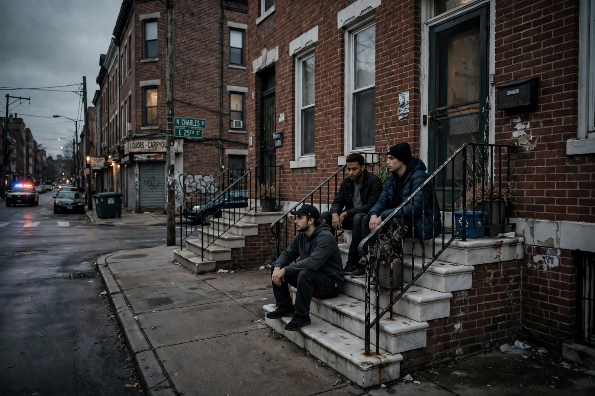

| The Wire | |
|---|---|
 | |
| Genre | Crime drama |
| Created by | David Simon |
| Starring | Dominic West, Idris Elba, Michael K. Williams, Wendell Pierce, Sonja Sohn, Clarke Peters, Lance Reddick |
| Country of origin | United States |
| No. of seasons | 5 |
| No. of episodes | 60 |
| Original network | HBO |
| Original release | June 2, 2002 – March 9, 2008 |
The Wire is an American crime drama television series created and primarily written by American author and former police reporter David Simon. The series was broadcast on the cable network HBO in the United States. It premiered on June 2, 2002, and concluded on March 9, 2008, comprising 60 episodes over five seasons. Set in Baltimore, Maryland, the series depicts the city's drug trade and the police who investigate it, and in later seasons widens its lens to the port, city government, the school system, and the print news media.
Each season of The Wire introduces a different institution in Baltimore and its relationship to law enforcement: the drug trade (season one), the seaport system (season two), city government and bureaucracy (season three), the public school system (season four), and the news media (season five), while continuing characters and storylines from earlier seasons. The show's title refers to the wiretaps used by the police detail at the center of the narrative.
Simon, a former Baltimore Sun reporter, drew on his years covering the police beat and on the experiences of co-writer Ed Burns, a former homicide detective and public school teacher. The series is noted for its realistic portrayal of urban life, its literary themes, and its use of Baltimore locations and local actors.
The ensemble cast includes Dominic West as Detective Jimmy McNulty, Idris Elba as drug lieutenant Stringer Bell, Michael K. Williams as stick-up man Omar Little, Wendell Pierce as Detective Bunk Moreland, Sonja Sohn as Detective Kima Greggs, Clarke Peters as Detective Lester Freamon, and Lance Reddick as Cedric Daniels. Omar Little — a shotgun-wielding robber of drug dealers who lives by a strict code — became one of television's most celebrated characters.
The series is frequently described as a critique of American institutions: the war on drugs, deindustrialization, political corruption, failing schools, and the decline of journalism. Its recurring thesis is that institutional incentives reliably defeat individual reform — summarized in the street maxim "the game is rigged." Each episode opens with a quotation from a character, set against a sequence of surveillance imagery.
During its original run, The Wire received modest ratings and was never nominated for a major Primetime Emmy Award, though it won Peabody Awards and widespread critical praise. In the years since, it has routinely been ranked among the greatest television series of all time, topping critics' polls by the BBC, Rolling Stone, and others. Barack Obama named it his favorite television show. The series is widely taught in university courses on sociology, media, and urban studies.